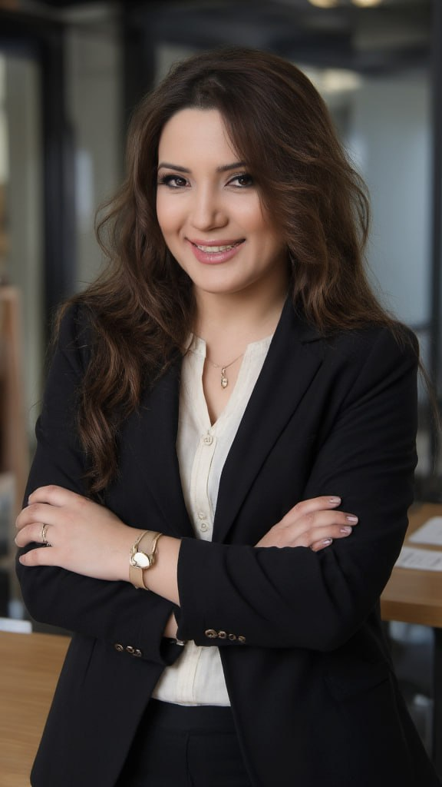

Sistemli Ailə Terapiyası

Kişi-qadın münasibətləri, valideyn-övlad bağı və
Samirə Rəhimova/Rüstəmova
Klinik psixoloq · ailə terapiyası üzrə mütəxəssis-təlimçi
-
2021
Bu günə qədər — klinik psixoloq. B.D.Karvasarski adına İnstitutda (Sankt-Peterburq) klinik psixologiya üzrə diplom. Fərdi qəbul: cütlük münasibətləri, valideyn-övlad bağı, təşviş pozuntuları
-
Sertifikat
Beynəlxalq Psixoterapiya Assosiasiyasının (IPAS) ailə terapiyası üzrə sertifikatı — cütlüklərlə və çətin yeniyetmələrlə iş
-
Praktikum
RAGIMOFF Psixologiya Məktəbində klinik psixoterapiya praktikumu
-
Müəllimlik
Sankt-Peterburq Əlavə Təhsil İnstitutunda ailə terapiyası modulları; RAGIMOFF Psixologiya Məktəbində tələbələr üçün ailə terapiyası mühazirələri
-
2013 — 2021
Şəxsi inkişaf təlimçisi və koç. İctimaiyyətlə əlaqələr, kommunikasiya və natiqlik üzrə təlimlər
-
2006
«Kişiləri qoruyun» bədii filmində Ceyran rolu — rejissor Şərif QurbanəliyevFilmə bax
-
2005 — 2012
«ATV maqazin» jurnalının təsisçisi və baş redaktoru — 2012-ci ilin dekabrına qədər
-
2003 — 2013
ATV kanalında «Şarm» verilişinin aparıcısı — on il efirdə
-
İkinci təhsil
Rəssamlıq Akademiyası — rəssam ixtisası
-
İlk təhsil
Azərbaycan Dövlət İncəsənət İnstitutu, teatr və kino fakültəsi — teatr və kino aktrisası ixtisası
Qeydiyyatdan keçmək lazimdir: yerlər təlim qrupuna əvvəlcədən yazılanlar arasında bölünür. Qrupa düşməsəniz, 1 sentyabrda dərslərə qoşulmaq mümkün olmayacaq.
Ailə Terapiyası
İki modul: 3 ay tədris — həftədə 2 dəfə, hər dərs 2 saat —
Dərslər həftədə 2 dəfə — çərşənbə axşamı və cümə axşamı, saat 14:00–16:00. Təlimə başlama tarixi — 1 sentyabr 2026.
Modul 1 Cütlük Terapiyası Kişi-qadın münasibətləri Cütlük sistemi ilə iş: diaqnostikadan böhran dövrünə qədər. İlkin qəbul, genoqramma, rollar və sərhədlər, patternlər, xəyanət və boşanma ərəfəsində yanaşma. 3 ay tədris + 6 ay superviziya 16 dərs həftədə 2 dəfə × 2 saat Proqram üzrə cəmi 600 AZN — 3 ay tədris və 6 ay superviziya daxil; ödəniş ayda 200 AZN × 3 ay, öncədən ödənişdə 500 AZN. Əyani və onlayn üçün qiymət eynidir. Tam proqrama bax
- Ailə sistemində disharmoniyanın müəyyən edilməsi — diaqnostika
- Cütlük terapiyasında ilkin qəbul
- Münaqişəli vəziyyətin təhlili
- Genoqramma — ailənin həyat dövrü
- Ailə sistemində rolların müəyyən olunması və gərgin sərhədlər
- Psixodrama — ailə modelində psixoterapevtik texnikalar
- Yazılmayan qaydalar — öhdəliklərin paylaşılması və pozulduqda cəzası
- Münasibətlərdə patternlərin müəyyən olunması
- Ailə terapiyasında klassik və müasir məktəblərinin metodların tətbiqi
- Sistemli Ailə Terapiyasının həll etdiyi problemlər dairəsi
- Şəxsi ehtiyacların ödənilməsi və seçim azadlığı
- Kommunikasiya metodları (Q. Beytson nəzəriyyəsi)
- Ailə münasibətlərində psixoterapevtik üsullar və hazır keyslər
- Kritik dönəmdə iş prosesi (xəyanət, təcavüz, boşanma ərəfəsində psixoterapevtik yanaşma)
- Asılılığın müxtəlif formalarından (alkoqol, narkotik, qumar və s.) əziyyət çəkənlə münasibətin təhlili
- Ailə terapiyasında dəstəkləyici mərhələ
Təlimin video yazıları — hər iki təlimatçının dərsinə əvvəlcədən baxa bilərsiniz:
Dr. Rəhimovun dərsiSamirə Rəhimovanın dərsi
Modul 2 Valideyn-Övlad Münasibətləri Valideynlər üçün ailə terapiyası Övladın inkişaf mərhələləri və kritik məqamlar, ailədaxili funksional pozuntular, ünsiyyət modelinin qurulması, oyun terapiyası, qorxular və aqressiya. Psixoloqlar, pedaqoqlar və valideynlər üçün. 3 ay tədris + 6 ay superviziya 16 dərs həftədə 2 dəfə × 2 saat Proqram üzrə cəmi 600 AZN — 3 ay tədris və 6 ay superviziya daxil; ödəniş ayda 200 AZN × 3 ay, öncədən ödənişdə 500 AZN. Əyani və onlayn üçün qiymət eynidir. Tam proqrama bax
- Uşağın psixo-fizioloji inkişaf mərhələləri
- İnkişaf mərhələlərində kritik məqamlar
- Ailə terapiyasında əlamətlərə görə diaqnostika
- Ailə daxilində funksional pozuntular
- Ailə əhvalatlarının sistemli təhlil prosesi
- Uşaqla ünsiyyət modelinin qurulması
- Gərgin münasibətlərdən çıxış yolları, valideynlərin tərbiyə metodlarının korreksiyası
- Problemli ailələrdə uşaqların davranış modelləri
- Uşaqlarda nevrotik və davranış pozuntuları
- Oyun terapiyası — davranış modelinin korreksiyası
- Uşaqlarda aqressiv davranışlar — cəza modeli
- Uşaqlarda qorxular və praktiki çıxış yolları
- Tədris və təhsildən geridə qalma problemləri
- Natamam ailədə uşaqların psixikasının tənzimlənməsi
- Ailədə cinsi tərbiyə metodları
- Xüsusi xəstəlik və ya davranış məhdudiyyəti olan insanlarla ailə münasibətlərinin idarə olunması
Proqram psixoloqlar, məktəb psixoloqları, müəllimlər, koçlar, tələbələr və valideynlər üçündür; ali təhsil tələb olunmur. Kursun sonunda imtahan keçirilir və Beynəlxalq Psixoterapiya Assosiasiyasının sertifikatı verilir.
Cütlük Terapiyası
İş birgə qəbulla başlayır, fərdi mərhələ ilə
Terapiyanı iki mütəxəssis birlikdə aparır: kişi tərəflə həkim-psixiatr Kənan Rəhimov, qadın tərəflə klinik psixoloq Samirə Rəhimova. İş birgə ilkin qəbulla başlayır: hər iki tərəf eyni otaqda dinlənilir və vəziyyət birlikdə qiymətləndirilir. Sonra fərdi mərhələ gəlir — hər kəs öz payını partnyorun yanında deyil, təhlükəsiz şəraitdə araşdırır. Yekun birgə sessiyada nəticələr birləşdirilir və razılaşmalar qurulur. Bir sessiya 1 saat çəkir, əyani və onlayn keçirilir. Prosesin tam təsviri və qiymətlər ayrıca səhifədədir.
Görüş təyin edin
Ailə Münasibətləri Haqqında
Bu mövzuda dərc olunmuş elmi əsaslı yazılar və praktik məsləhətlər.